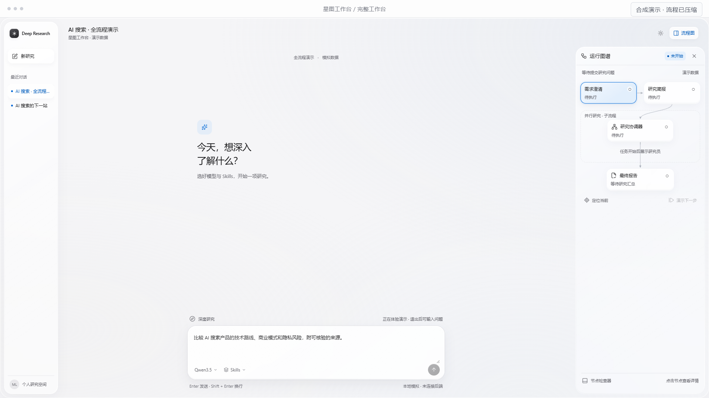
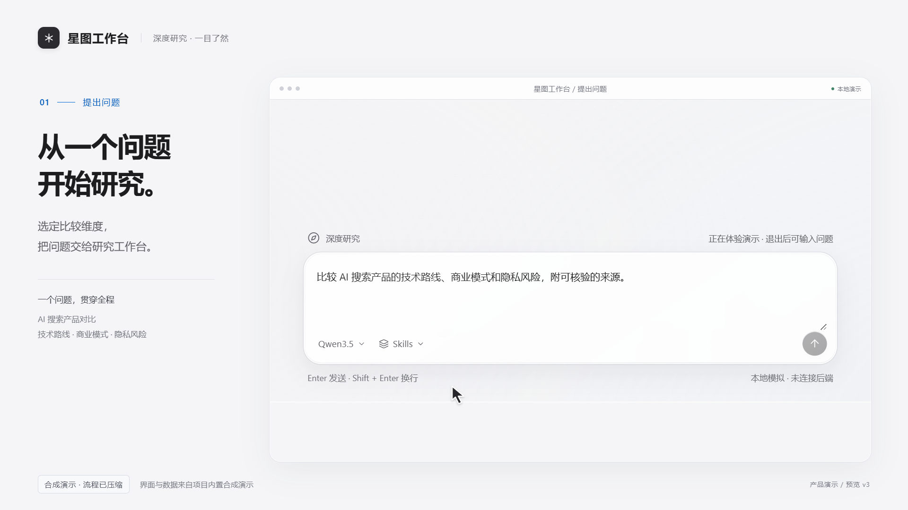
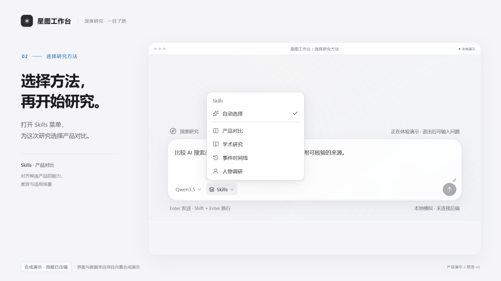
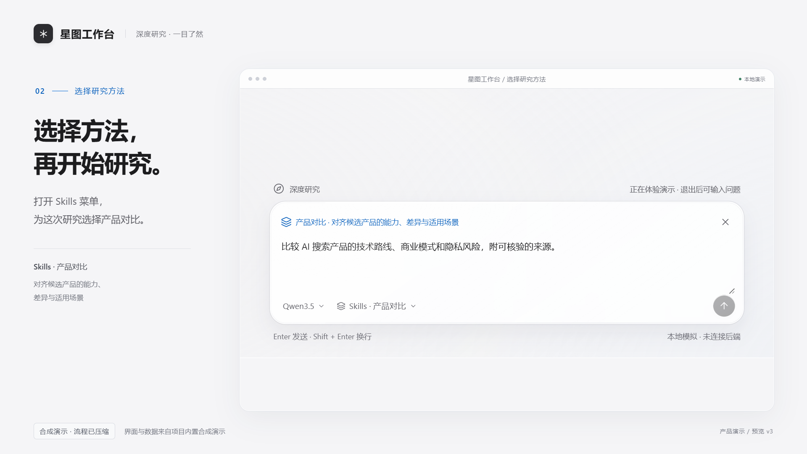
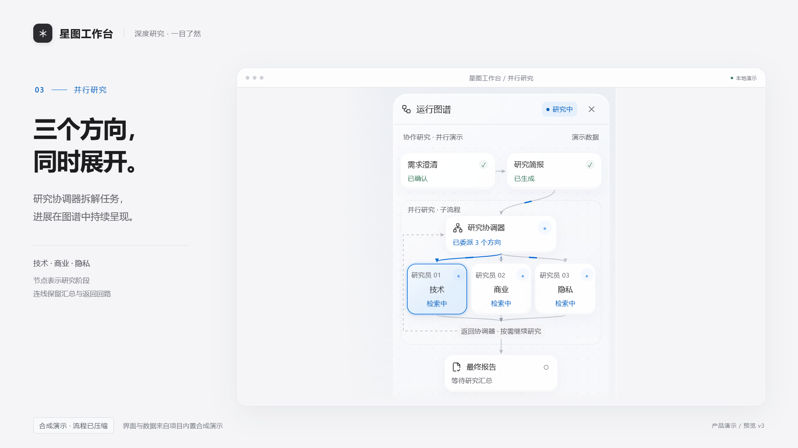
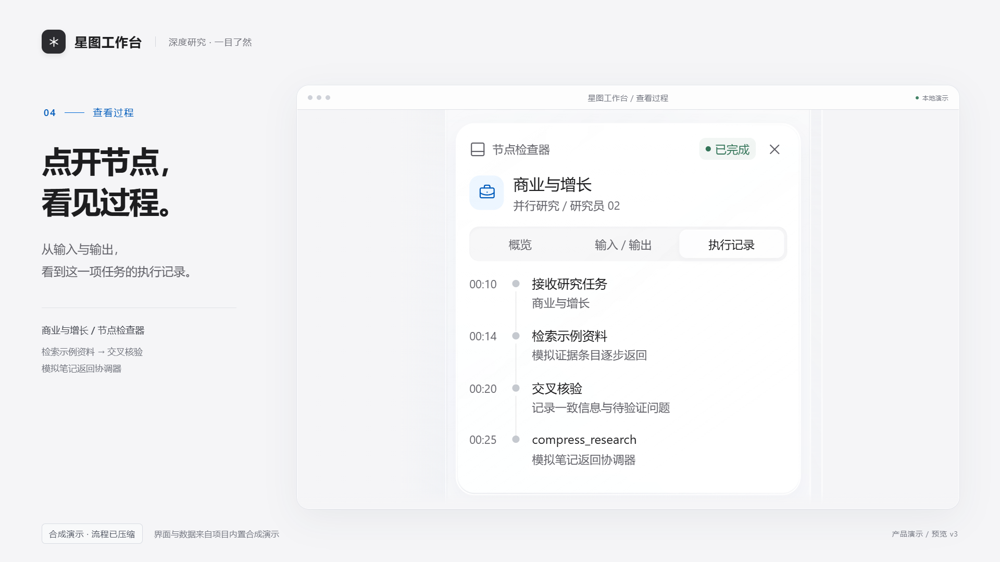
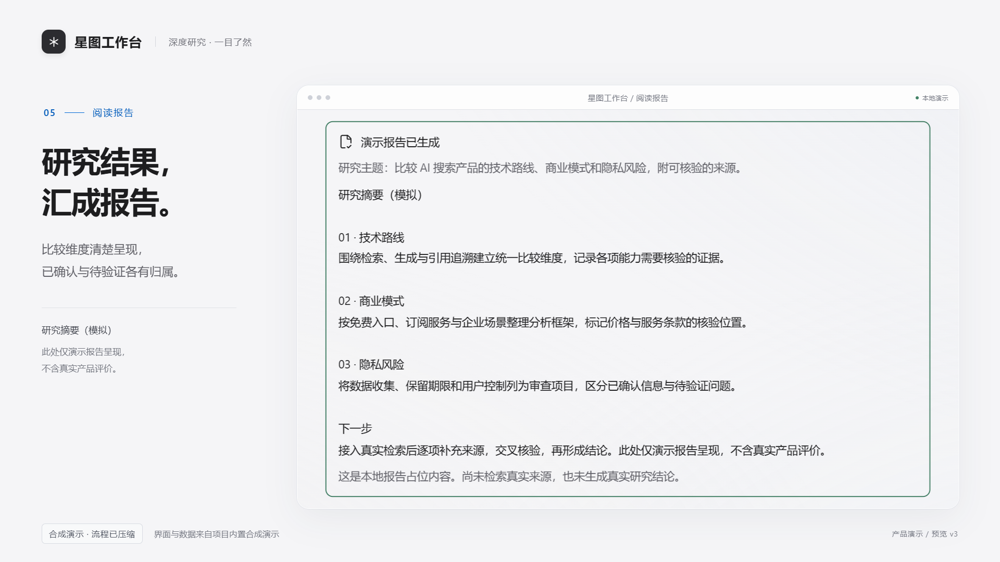
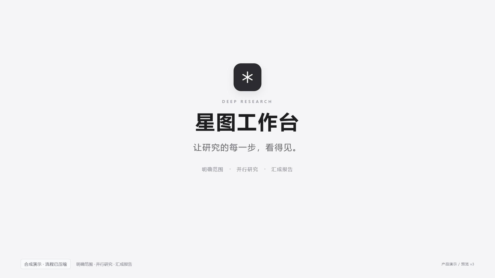

完整 UI 展示 2 秒 → 平滑聚焦输入框 → 展开 Skills → 选择「产品对比」→ 开始研究。新版方案延长至 18 秒。
正在准备播放…
下方是前 14 秒的无声动效小样，包含开场、Skills 选择、图谱运行、节点交互和完成状态。
完整交互分镜 / 逐帧检查 · 分镜总览 · 检查记录

1.5 秒 · 完整工作台
3.5 秒 · 聚焦输入框
5.0 秒 · 展开 Skills
7.0 秒 · 选择产品对比
9.5 秒 · 并行研究
12.5 秒 · 查看执行记录
14.5 秒 · 阅读报告
17.5 秒 · 品牌收尾